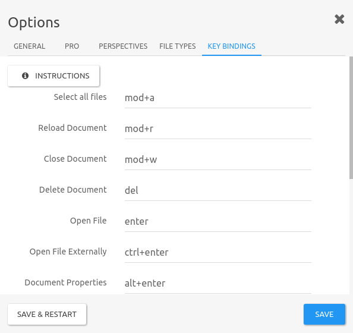

Keybindings in TagSpaces
Keyboard shortcuts are combinations of two or more keys that you can use to perform a specific task that would typically require more than one mouse click. They are very useful and can make it easier to work with your software, saving you time and effort as you work with TagSpaces and other applications.
To use a keyboard shortcut, hold down one or more keys while pressing the last key of the shortcut. For example, to use the shortcut Ctrl + C on Windows and Linux or Command - C on Mac OS X, hold down Ctrl button, press C and then release both keys.
TagSpaces like a much of modern software also provides a range of keyboard shortcuts for better experience with it. Please find the list of the currently supported keyboard shortcuts bellow.
Default keybindings
General
| Action | Key binding on Windows/Linux | Key binding on OS X |
|---|---|---|
| Show Keybinding Help | F1 |
F1 |
| Reload the application | F5 |
F5 |
| Fullscreen mode | F11 |
F11 |
| Show developer tools | F12 |
F12 |
| Show tag libray | s t |
s t |
| Show directory navigator | s f |
s f |
Working with documents
| Action | Key binding on Windows/Linux | Key binding on OS X |
|---|---|---|
| Open document | enter |
enter |
| Open document in the default external programm | ctrl + enter |
ctrl + enter |
| Rename document | F2 |
F2 |
| Delete document(s) | del |
? |
| Open the search box | control + f |
⌘ + f |
| Tag document(s) | control + t |
⌘ + t |
| Select/open the next document | right or down |
right or down |
| Select/open the previous document | left or up |
left or up |
| Select all documents | control + a |
⌘ + a |
| Edit the currenty opened document | control + e |
⌘ + e |
| Save the currenty opened document | control + s |
⌘ + s |
| Reload the currenty opened document | control + r |
⌘ + r |
| Close the currenty opened document | control + w |
⌘ + w |
| Open the properties of the currenty opened document | alt+enter |
alt+enter |
Global keybindings available even if TagSpaces is currenlty not in focus, but running in background for example in the tray.
| Action | Key binding on Windows/Linux | Key binding on OS X |
|---|---|---|
| Show TagSpaces | control + alt + w |
⌘ + alt + w |
| Create new text document | control + alt + n |
⌘ + alt + n |
| Open next document | control + alt + s |
⌘ + alt + s |
| Open previous document | control + alt + a |
⌘ + alt + a |
| Pause/resume playback | control + alt + p |
⌘ + alt + p |
Changing the keybindings
Some of the keybingings are configurable. To change them, click on View menu item from the main menu and choose Settings. In the setting dialog, open the tab KEY BINDINGS.

Here you can see all the keyboard shortcuts by default in TagSpaces, and what actions they perform. You also have the ability to change keyboard shortcuts by clicking on the field in which they were written. Before changing any of the binding, please read the following short instructions:
- For modifier keys you can use
shift,ctrl,alt,option,meta,commandandmod. The last one is special modifier allowing us to reffer to the control and command key on Windows/Linux and OS X operating systems respectively. - Other special keys are
backspace,tab,enter,return,capslock,esc,escape,space,pageup,pagedown,end,home,left,up,right,down,insanddel. - Any other key you should be able to reference by name like
a,/,$,*,=. - You can assign many keys to a single operation, simply by separating them by
,.